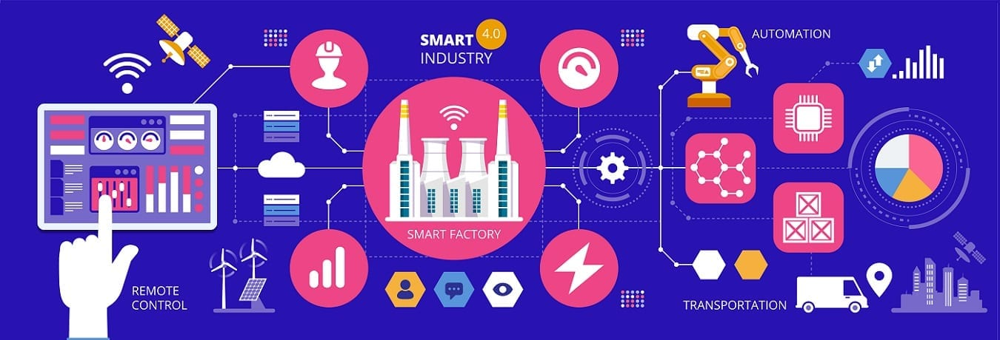

Naam: Jan-Willem Arendsen, Datum: 20-10-2020
Mijn naam is Jan-Willem Arendsen en ik volg de opleiding Technisch Bedrijfskunde aan het Saxion in Deventer. Op dit moment zit ik in het derde leerjaar en volg ik de Minor Smart Industry aan de HAN. Voor het vak Smart Start is er onderzoek gedaan naar de volwassenheid van IoT Solutions op het gebied van Smart Manufacturing.
Om de volwassenheid van een organisatie op het gebied van Smart Industry te onderzoeken heb ik in eerste instantie een enquête op Google Forms gemaakt en op mijn portfolio geplaatst. Dit ‘’model’’ is tot stand gekomen van het deskresearch artikel Smart Manufacturing. Tijdens het schrijven van dit artikel heb ik de verschillende meetniveaus op het gebied van Smart Manufacturing bepaald. Hoe meer onderdelen in het bedrijf geïmplementeerd zijn, hoe hoger de mate van volwassenheid is op het gebied van Smart Manufacturing. Klik op de link “Smart Manufacturing” onderaan de pagina om naar dit artikel te gaan.
Na de feedback van meneer Bergshoeff heb ik ervoor gekozen om geen enquêtes naar bedrijven te sturen, omdat veel bedrijven niet op enquêtes zitten te wachten, vandaar dat ik het bedrijf waarvoor het project gedaan wordt heb geïnterviewd. IoT Solutions Partner is vooral een Research & Developmentbedrijf en geen productiebedrijf. De reden dat ik IoT Solutions Partner heb geïnterviewd is, omdat ik dacht dat dit wel tot interessante informatie kan leiden.
Het interview heb ik afgenomen bij eigenaar van IoT Solutions Partner, Pieter Hoenderken. De basis van dit interview was de gemaakte enquête. Zoals in de enquête gelezen kan worden, wordt elke vraag eerst geïntroduceerd met een alinea over de theorie over dat onderdeel, om zo de mensen hierover te informeren. Dit stukje theorie heb ik ook gegeven tijdens het interview, om zo dezelfde input te geven als aan de mensen die de enquête invullen.
Iot Solutions Partner is een Research & Developmentbedrijf in Doetinchem. IoT Solutions Partner maakt gebruik van verticale integratie. Zij proberen alle processen in een bedrijf te digitaliseren, zodat er inzicht verkregen wordt op wat er in het proces gebeurt. Ook zijn er projecten voor andere bedrijven uitgevoerd, waarbij ervoor gezorgd wordt dat het systeem met de juiste mensen communiceert, waardoor de communicatie directer en sneller geworden is. Zo krijgen de mensen op het kantoor van dat bedrijf nu ook een melding als er een storing met een hal is en niet alleen de monteur. Voor dit onderdeel krijgt IoT Solutions Partner dus 10 van de 10 punten.
Het volgende punt waarop de volwassenheid beoordeeld is, is in hoeverre het bedrijf bezig is met virtualisatie. Op dit moment maakt IoT Solutions Partner er nog geen gebruik van, maar dit wordt in een project waar zij op dit moment mee bezig zijn, toe gepast. In dit project wordt het klimaat continu gemonitord tijdens het vervoeren van kippen. Hierbij worden de waardes visueel weergegeven door een lijngrafiek op een monitor. Omdat dit nog niet toegepast is en dit verder niet wordt toegepast, krijgt IoT Solutions Partner op dit punt 5 van de 10 punten, omdat er al wel onderzoek naar gedaan is.
Er wordt geen gebruik gemaakt van Automatisering bij IoT Solutions Partner. Ook niet bij projecten. De projecten hebben voornamelijk betrekking op het digitaal weergeven van waardes die een sensor uitleest, niet de vervolgstap daar op. De klant moet zelf nog de vervolgstap uitvoeren. Bijvoorbeeld ons legionellapreventiesysteem waar wij mee bezig zijn, die geeft alleen aan dat de kraan doorgespoeld moet worden. Het doorspoelen wordt niet automatisch gedaan. Vandaar dat hier geen punten op gescoord worden.
Zelf heeft IoT Solutions niet met productie te maken, dus ook niet met de traceerbaarheid van producten en/ of grondstoffen. Wel hebben zij op dit moment een project lopen, waarbij fruit gevolgd wordt vanaf het land van herkomst tot in de fabriek. Hierbij wordt het fruit gevolgd en de staat van het fruit. Dit wil zeggen dat er beoordeeld wordt tijdens het traceren hoe rijp het fruit is. Met dit project zijn zij nu bezig, daarom scoren zij 7 van de 10 punten op dit gebied.
Om snelheid in het ontwikkelproces te krijgen, wordt bij IoT Solutions Partner additive manufacturing gebruikt. Additive manufacturing wordt dus voornamelijk gebruikt voor prototypes. Zelf hebben zij geen 3D-printer, maar in de buurt zit een Fablab, waar zij onderdelen laten printen. Omdat zij zelf geen 3D-printer hebben en alleen additive manufacturing gebruiken voor prototypes en niet voor de standaard productie, wordt dit onderdeel beoordeeld met 7 van de 10 punten.
IoT Solutions Partner is op dit moment niet bezig met Smart energiebeheer van het gebouw. Dit komt mede omdat zij relatief weinig elektriciteit gebruiken in vergelijking met productiebedrijven. Ook maakt IoT Solutions Partner geen gebruik van Augmented Reality. Daarom scoren zij op deze twee onderdeel geen punten.
Het laatste onderdeel is Connectivity. Connectivity omvat vier onderdelen, namelijk Cloud Computing, Internet of Things (IoT), Data-analyse en Cyber Security. Van alle vier de onderdelen maakt IoT Solutions Partner gebruik. Het hele dataplatform staat namelijk in de Cloud samen met alle sensoren en de hele administratie. Zij proberen alle mogelijke dingen om een apparaat digitaal te krijgen. Alle verkregen data worden geanalyseerd en gepresenteerd. Op het gebied van Cyber Security, proberen zij alle data zo te versleutelen dat de data onderweg niet af te lezen is en zijn zij veel bezig met data, dat via mobiele netwerken wordt verstuurd, te encripten. Voor dit onderdeel kunnen 20 punten verkregen worden, omdat dit onderdeel groter dan de overige onderdelen is. Vandaar dat hier 20 punten verkregen kunnen worden. IoT Solutions Partner heeft alle 20 punten gekregen op dit vlak.
De 90 punten die verkregen konden worden zijn omgezet naar een 100punts score. De totale eindscore van IoT Solutions Partner op het gebied van Smart Manufacturing wordt hierdoor 54/100. Voor het beoordelen op sommige vlakken ben ik net iets strenger geweest, omdat In IoT Solutions Partner een Research & Development bedrijf is en geen productiebedrijf. In de tabel kan de uitslag met eindscore van IoT Solutions gevonden worden.
Ga naar
Smart Manufacturing
Ga naar
Enquête Volwassenheid Smart Manufacturing
{kind=link}